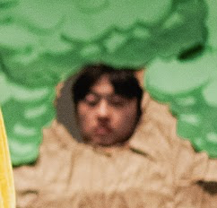

About This Project
Purpose
This website was created as a final project for my web design class. I wanted to create a platform where I could share my favorite movies and TV shows that I've watched recently, along with my personal ratings.
Features
- Browse movies and TV shows by category
- View detailed information about each media item
- Like/Dislike my recommendations
- Links to Wikipedia for further reading
Technical Implementation
This website utilizes HTML5, CSS3, and JavaScript to create an interactive and accessible experience. I implemented flexbox for responsive layouts and designed for a filtering functionality.
Feel free to use the rating system to express your own agreement or disagreement with my ratings.
Future Improvements
In the future, I plan to add more features such as:
- User accounts to save favorite movies and shows
- Comment section for discussions
- More detailed rating system with multiple criteria
- Search functionality
About Me
I'm a UX design student with a passion for movies and TV shows. This website combines my love for web development and media into one project. I hope you enjoy browsing my recommendations!
Feel free to reach out with any suggestions or feedback about the website.